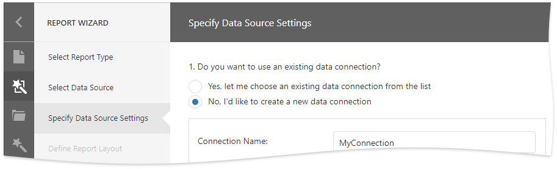
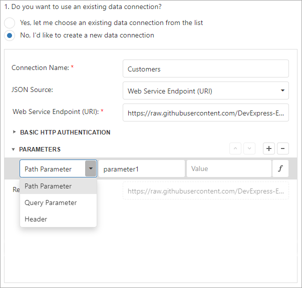

Specify Data Source Settings (JSON)
This page appears if you selected JSON on the previous page.

Select an Existing Data Connection
Select the first option and choose a data connection from the list.

Create a New Data Connection
Select the second option to create a new connection.

Specify the connection name and select the JSON source.
Web Service Endpoint (URI)

You can also specify the Web Service Endpoint's request parameters (username and password, HTTP headers, or query parameters)

JSON String

You can also click the Upload JSON button to load the JSON string from a JSON file.
Select Data Fields
At this step, the wizard shows JSON schema. Check the data fields you want to include in your report.

Click Next to proceed.